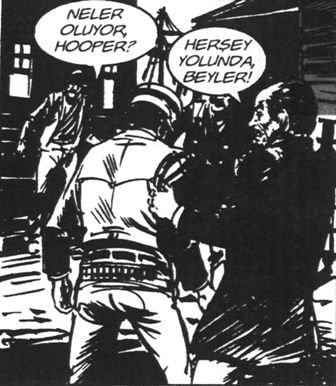

– Amirim sizi bekliyor girin lütfen!
Hıdır, Genel Müdür Yardımcısı’nın odasına girerken yapacağı konuşmanın zorluğunu iliklerine kadar hissetti. KİP marka kıyafetinin içinde hafif bir titreme geçirdi. Dosyayı sol eline aldı. Sağ elini boşta tuttu. Zielke’nin Beden Dili kitabında “Muhatabınız tokalaşmak için elini uzattığında, sağ eliniz doluysa aradaki süre faciadır” diyordu. Sağ elim boş mu diye bir de gözüyle kontrol etti.
Şimdi ona kim güç verirdi? Aha da Emile Ratelband.
Ateş üzerinde yürümeyi öğreten adam. Sayfa 147’yi artık ezberlemişti.
“Her tür korku alt edilebilir ve kanaatler değiştirilebilir. Ateşte yürüyüşle bu kanıtlanmıştır.”
Odacı kapıyı açtı, lüks içinde yüzen büyük oda göründü. Plazma TV, küçük TV, koca bir masa, deri depderi koltuklar ve yüzünde iki bıyık olan Genel Müdür Yardımcısı.
“Aklı başında kimse tahrik edilmeden gönüllü olarak kızgın kömürlerin üzerinde yürümez. Herkes içgüdüsel olarak bundan çekinir.”
Bir an o iki bıyıktan yukarıdakinin aslında tek, tam, bütün, “gomple”, ayrılamaz, yekpare, tamam, tüm bir kaş olduğunu fark etti ve ortalama bir adamın bıyığı kadar varlardı.
Ratelband’ı düşündü.
“İnsanlar sıcak bir ocak, ateş ya da kaynar suyla yaşadıkları deneyimi hatırlar. Bu çok acı verici bir deneyimdi. Böyle bir şeyin insan sağlığına zararlı olduğu ve çok acı verdiği kanaati kimseye örnek olma şevki vermez.
Fakat kanaatlerini değiştirerek çoğu sonunda aynı şeyi yapar. Yeni kanaatleri şudur: Diğerlerinin yaptığını yapabilirim. Çıplak ayakla ateşin üzerinde yürüyebilirim.”
Kapıdan girerken odaya bütün ihtişamı veren asıl objeyi fark etti; güç simgesi kıpkırmızı bir halı. Ateş gibi.
“Pozitif bir tespitleme işlenerek negatif tespitleme iptal edilir. O anda size buna uygun olmadığınızı söyleyen ses, sesini keser. İlk adımı atar atmaz cesaretiniz size yol gösterir!”
Hıdır Azgören kapıda üç beş saniye oyalandıktan sonra, hayatının bundan sonrasına ilk adımı cesaretle attı. Artık ateşin üzerinde yürüyordu.
Sağ eli tokalaşmak için ileride, bütün o yolu kararlı ve hissederek yürüdü. Ateşi ayaklarının altında hissediyordu. Gerçekten hissediyordu.
Eli havada kaldı. Genel Müdür Yardımcısı donmuş gözlerle yere bakıyordu. “Eh be Emile, ortalık ulvi oldu, Genel Müdür Yardımcısı da ateşi fark etti” diye düşündü. Baktı Genel Müdür Yardımcısı bir şey demeden yere bakıyor, donmuş. Hayran olduğu kişisel gelişim uzmanlarının yaptığını yaptı, en güçlü pozisyondaki sandalyeye oturdu.
“Lan bu ne bakıyor aşağı aşağı?” Aklına Harry Alder’in NLP Hayatınızı Değiştirir kitabı geldi. İnsanın gözünün baktığı yerden ne düşündüğünü tespit etmeyi öğrenmişti Allah’tan. Harry Usta’nın yazdıklarını ezberinden dikkatle hatırladı: “Sağ üste bakıyorsa görsel tasarlama yapıyor. Sol üst, görüntü hatırlıyor. Sağ alt, bedensel bir duyumu var, sol alta bakıyorsa iç hesaplaşma.” Dikkatle Genel Müdür Yardımcısı’nın gözlerine baktı. Sağ göz sağ alta, sol göz sol üste. Yuh!
– Şaşı lan bu!
– Ne dedin oğlum sen?
Hay senin üç hafta diyafram çalışan beynini... Midesi, kendi içinde kontrol edilemez bir diyafram yaratmıştı. Bu kişisel gelişim yolculuğunda bir tek diyaframı gelişmişti. Reha Muhtar haberlerindeki mezbahadan kaçmış kurbanlık tosunlar gibi ses çıkarıyordu, kontrolsüzce.
Gözüne saniyenin yüzde biri kadar bir sürede masanın üzerindeki kap takıldı.
Jo-Ellan Dimitrius ve Mark Mazzarella adlı mozzerella peynirlerinin yazdığı İnsanları Okumak kitabının “Koleksiyonlar” bölümünü hatırladı.
“Çoğu zaman nesilden nesile geçerler. Koleksiyonlar, sağlamlığı, ailenin önemini ve gelenek sevgisini gösterebilir. Beyzbol kartlarından Elvis’in özel eşyalarına kadar koleksiyonlar, zengin bir bilgi arşivi sunarlar. Kişi hakkında bilgi toplarsınız. Diyaloğu oradan başlatırsanız karşınızdakini rahat etkilersiniz.”
– Efendim, bakır kap bu. Belli ki antika. Bu yüzlerce yıllık bir aile geleneğinizi yansıtıyor.
– Demin hemşerilerim getirdi, biz bunda kete neyin pişiririz!
Hıdır kilitlendi, bataktan nasıl kurtulacağını planlarken telefon çaldı.
– Ha oğlum, seni aratmıştım. Ha. Bizim memleketten 20 kadar çocuk var ha! Bunları bakanlığa yerleştiriverin. Ha, çay ocağı falan ha! Yer varsa şef mef de olur ha! Daire başkanı yapmayın ama, hah.
Hıdır fırsattan istifade okuduğu “yüz okuma” kitaplarını hatırladı. İnsanın tipine bakıp kişiliğini çözüyorsun. Yav mucizeye bakar mısınız! İnsanları tanımaya, anlamaya çalışmak. Üzüntüsünü, sevincini fark etmek. Herkesin tek ve özel olduğunu düşünmek. Bizim kültürümüz buna, insanlara vakit ayırmaya, değer vermeye, hasbihâle dayalıdır. Vakit verirsin insanlara. Nasıl büyük hataymış meğerse, Amerikalı pratik çözmüş olayı. Hamburger menüsü gibi. Big Mac, büyük patates, küçük içecek, fiyat şu.
Big kafa, büyük burun, küçük göz; adam karaktersiz.
Kulak küçükse şöylesin, elmacık kemiğin şöyleyse karakterin bu.
Aslında kitapta okuduktan sonra en sağlam arkadaşlarının, onun en kötü gününde yanında olan dostlarının, hepsinin aslında karaktersiz olduğunu fark etmişti.
Genel Müdür Yardımcısı telefonla konuşup Hıdır’ın ayaklarına bakarken, o incelemeye başladı. Barok stili yatık sütun şeklinde bir kaş. Kaşın tam ortasına asılmış bir burun, harbiden büyük. Cyrano de Bergerac’ın Doğu şubesi (Cyrano’yu zıpkın markası olduğu için biliyordu). Kulaklar tarla faresi kadar küçük. Gözleri çipil, birbirine acayip yakın. Öyle yakın ki, son anda araya burnu koymuşlar. Çene gereksiz büyük ve geniş; öyle büyük ki biraz geç doğsa sırf çene doğacakmış. Yav, “yüz okuma” kitaplarında böyle bir şey yok ki. Bir de Sadettin Teksoy’u çözememişti. Yav tabii ABD’de böyle bir tip yok ki. Heriflerin hepsi yakışıklı, iri yarı. Eee, kitaplar da oraya göre hazırlanmış. Baksana kaşla bıyığın arasında gözler, eşittir işaretinin arasındaki çift nokta gibi. Çözememişti adamı.
Müdürün hâlâ ayaklarına baktığını ve ayaklarının ürperdiğini hissetti, aşağıya doğru bakınca dondu.
Ürpermenin nedeninin de, cereyan olduğunu fark etti. Ayakkabıları ayağında değildi; ikisi aynı anda kapıya doğru baktılar.
Dünden beri üç defa cilalanmış ayakkabılar kapının eşiğinden Hıdır’a “Ne yaptın abi?” diyerek bakıyorlardı, ömür boyu APK memuru kalacak Hıdır’a.
İkisi aynı anda ayaklara baktılar. Sağ ayak başparmağının da çoraptan kafayı çıkarmış, amirine dikkatle baktığını fark etti.
Gaza gelmiş, kızıl alev alev halıyı görünce o konsantrasyonla ateşin üzerinde yürümüştü Hıdır.
İçinden “Tabanların yanmadı; ama kariyerin birinci derece yandı a benim Malak Hıdırım!” dedi.
Gidip ayakkabıları giysem mi, giymesem mi kararsız kaldı.
Emile Ratelband’ı düşündü. Arnheim’daki evinin bahçesindeki yüzme havuzunda güneşleniyor olmalıydı.
Aklına Sang H. Kim’in kitabı geldi, “Küçük başarısızlıklar ortaya çıktığında, yönünüzü büyük hedefinize çevirin. Başarısızlığın ölçüsünü, sadece başarısız olduğunuz bölümün genişliğine bakarak değil, genel olarak değerlendirin.”
Konsantre oldu ve Herbert Casson’un Hayatta İlerle ve İlerlet kitabını hatırladı, vurucu cümleyi:
“Bu iş benim için bir başlangıç mı, yoksa son mu?”
“Başlangıç, gir konuya” dedi içinden.
– Sayın Müdürüm...
– Evet?
Girişi Dr. M. Scott Peck’in Az Seçilen Yol kitabından yapmaya karar vermişti. “Yaşamın tüm sorunlarını çözmenin tek yolu onları çözmektir. Bu cümle aptalca bir tekrar ya da anlamı zaten yeterince açık bir şeyi tekrarlamak için gibi görünse de aslında bu, insan ırkının çoğunluğu tarafından henüz idrak edilmemiş bir gerçektir. Bunun nedeni bir sorunu çözmeden önce onun sorumluluğunu kabul etmemiz gerekmesidir.”
– Efendim, şu an bakanlıkta beş kişinin yapacağı işi elli kişi yapıyor. Çay ocaklarında dörder, beşer kişi, elinde sigara sohbet ediyor; ama çay istediğimizde yarım saatte geliyor. Siz ISO çalışmaları, kalite faaliyetleri yürüttünüz. ISO belgesi almak için her iki memura bir bilgisayar düşmesi gerekiyordu; oysa beş memura bir bilgisayar düşüyordu. O gün Maliye Bakanlığı’ndan bilgisayarları getirttiler, sayıldı, tam. ISO belgesini alınca bilgisayarlar geri gitti. Bunun neresi kalite? Teftiş olacağında tüm tuvaletlere tuvalet kâğıdı konuyor, teftiş bittiği an hiç yok. Yöneticiler ve çalışanlar ayrı yerlerde yemek yiyorlar, hiç bilgi paylaşımı yok. O yüzden yeni aldığınız ZGL plakalı araçlar için çalışanlar “Zararlı Döt Laleleri” ismini taktılar. Dağ başlarında profesörlerle misyon-vizyon belirlediniz. Herkes ezberledi; ama kimse sallamıyor. Misyonda ise “konştrüktesüf” diye bir kelime var, kimse anlamını bilmiyor. Bütün bakanlık hemşerilerle dolu. Rüşvetsiz iş dönmüyor. Vatandaşın işleri aylarca bekliyor. Bütün işler tanıdıklarla yürütülüyor.
İstihkak sistemi facia. Bir müdürlük eğer o yılki ödeneğinin tamamını harcamazsa, ertesi seneki ödeneği aynı oranda eksik geliyor. Ertesi sene daha az para almamak için tüm birimler ne yapıp edip o senenin istihkak parasını harcıyorlar. Bizim odanın tüm duvarlarındaki yepyeni lambriler sökülüp yeniden lambri yapıldı. Sırf bu senenin ödeneğini bitirmek için tüm bakanlık boşa para harcıyor. Her yer bürokrasi, müthiş bir verimsizlik ve her yer makam aracı kaynıyor. Rotterdam belediyesinin bir tane makam aracı var, bizim bakanlıkta iki yüz araç. Bir değişim projesi gerekiyor ve ben bunun için büyük bir hazırlık yaptım.
Diyecekti, diyemedi.
– Ben dikey hiyerarşi...
Boğazı düğümlendi. Hık mık etti. Baktı ki bütün gardı düşmüş. Nefesi hiç diyaframa inmiyor, ağzından şu kelimeler döküldü:
– Ben hayırlı olsuna gelmiştim efendim...
– Oğlum beş ay oldu ben makama geleli.
– Allah nice beş aylar nasip etsin amirim.
Ayak başparmağı da, bu sözü titreyerek onayladı.
Aklına (aklı iyice karışmıştı) Tony Buzan’ın Aklını En İyi Şekilde Kullan kitabı geldi. Sayfa 75, öneri 7:
“Öğrenme sürenizi öncelik ve yalınlık etkilerinin azami ölçüde olacağı, öğrenme sırasında ortadaki sarkmanın asgariye indirileceği şekilde organize edin.”
“Ne demek lan şimdi bu?” diye düşündü, gözü kararmaya, başı dönmeye başlamıştı. Son bir çabayla Jack Ensign Addington’ı hatırladı; % 100 Düşünce Gücü: “Hz. İsa’nın kendini yönetme alanındaki başarısının nedenlerinden biri buydu sanırım. İsa ‘Tarlalar biçilecek kadar beyazlaşmış bile’ dedi. Vaat edilmiş topraklar...”
Hıdır yana doğru kaykıldı. “Kardeşim bana ne sizin dininizden!” diye düşündü. Son bir çabayla Genel Müdür Yardımcısı’yla göz göze geldiler.
Barok sütunun ortasının yukarı doğru kalktığını ve sütunun kırıldığını fark etti. Kaşların arası ilk defa açılıyordu.
Hıdır devrilirken fısırdayarak sordu:
– Tony Buzağısı hiç kete yemiş midir Sayın Genel Müdürüm?
Bereketli Bilgi Ritüeli tamamıyla yaşamın öğrencisi durumuna gelmeye ilişkindir. [...] Bu varoluş dersliğinde öğrendiklerini kullanmanı gerektirir. [...] Bereketli Bilgi Ritüeli’ni uygulamak için her gün birçok alt ritüeller gerçekleştirirlerdi.[16]
